This page provides access to a number of time-lapse videos that
show interesting events captured by the sky
camera. Most of the videos were originally released through the
CEDA Document Repository, but have now been transferred to the Zenodo
open repository.
All of the are published under
a Creative
Commons Attribution 4.0 International license. This means that
anyone may use them for any purpose, so long as an appropriate credit
is given to the original content.
You may either watch the video through the Zonodo website or
download it to your computer. Links given in the listings below will
open the Zenodo page in a new tab.
The videos cover the following topics:
Cumulus clouds
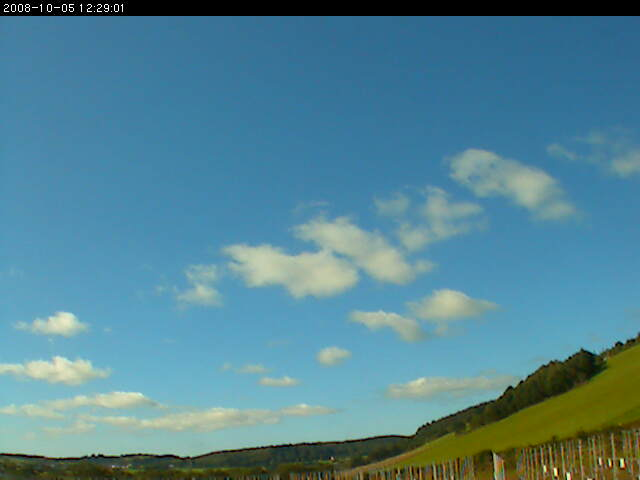
Return to the top of the page.
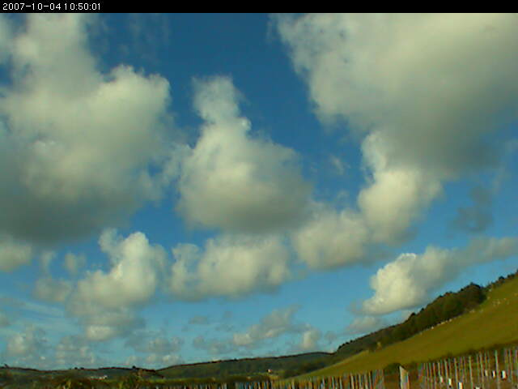
- Description: A time-lapse video showing Cumulus mediocris clouds
(with occasional Cirrus clouds and contrails at a higher level). The
Cumulus clouds are in a continuous state of change. Many can be seen
to form and/or to evaporate within the field of view. The evaporating
clouds give rise to ragged Cumulus fractus formations.
- Video start time: 2007-10-04 05:30 UTC
- Link to the video in the Zenodo repository (opens in a new tab)
Return to the top of the page.
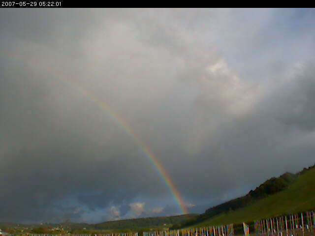
Return to the top of the page.
Cumulonimbus clouds
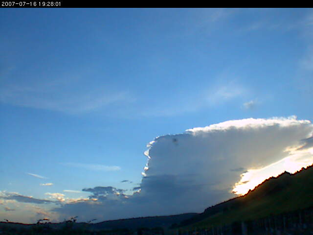
Return to the top of the page.
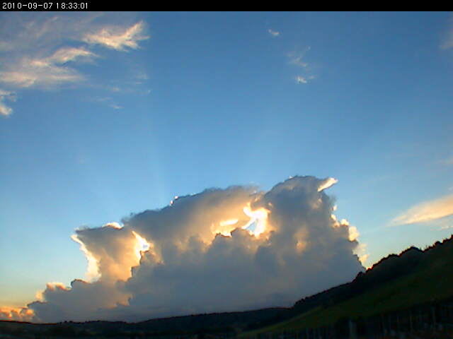
- Description: A time-lapse video showing Cumulonimbus cloud
development at sunset. Most of the first Cumulonimbus cloud is obscured
by the smaller Cumulus clouds in the foreground. Its anvil is clearly
visible. Three further Cumulonimbus clouds cast crepuscular rays from
the light of the setting sun. Their anvils merge together.
- Video start time: 2010-09-07 16:50 UTC
-
Link to the video in the Zenodo repository (opens in a new tab)
Return to the top of the page.
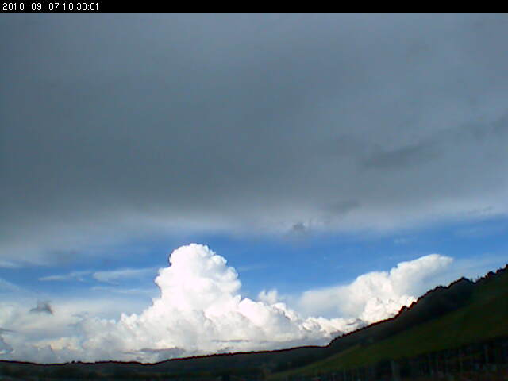
- Description: A time-lapse video showing widespread development
of Cumulonimbus clouds, some of which have extensive Anvils. A variety
of other cumuloform clouds can be seen. The origin of the widespread
cirrus cloud seen during the second half of the sequence is probably
outflow from Cumulonimbus anvils.
- Video start time: 2010-09-07 05:30 UTC
-
Link to the video in the Zenodo repository (opens in a new tab)
Return to the top of the page.
Wave clouds
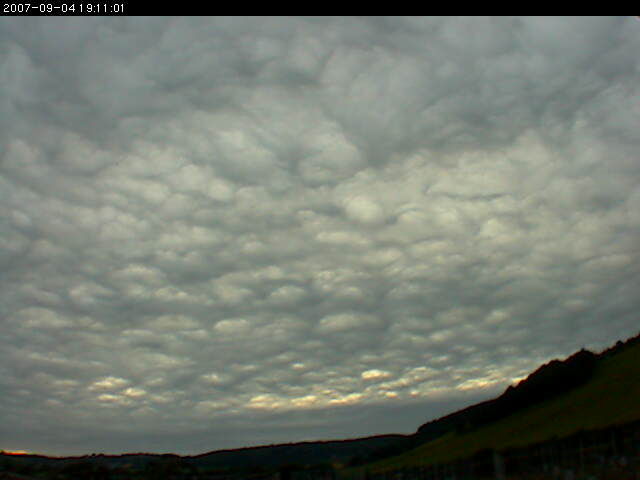
- Description: A time-lapse video showing Stratocumulus clouds
that develop wave-like asperitas features. During the early part of
the sequence, there appear to be layers of cloud at two distinct
levels. These are lit differently by the setting sun. The asperitas
features begin to appear approximately half way through the sequence.
Altocumulus undulatus clouds can be seen towards the end.
- Video start time: 2007-09-04 17:50 UTC
-
Link to the video in the Zenodo repository (opens in a new tab)
Return to the top of the page.
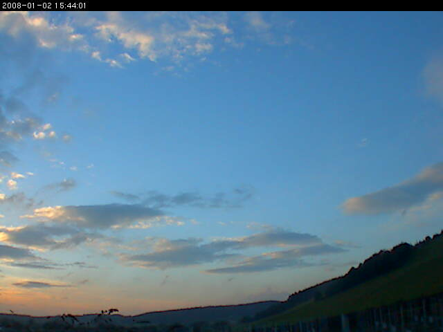
- Description: A time-lapse video showing Altocumulus lenticularis
clouds revealing Mountain Wave activity. Notice how the positions of the
clouds remain fixed relative to the landscape. This contrasts with the
lower-level (Cumulus) clouds, seen at the beginning of the sequence,
which move downstream with the wind.
- Video start time: 2008-10-02 15:44 UTC
-
Link to the video in the Zenodo repository
(opens in a new tab)
Return to the top of the page.
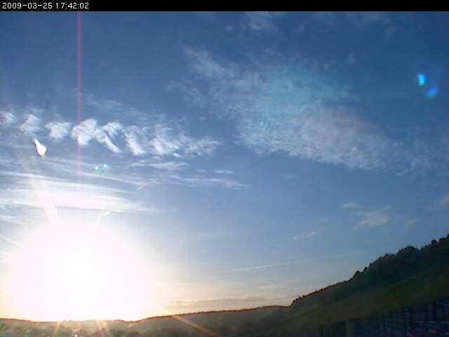
- Description: A time-lapse video showing Altocumulus fluctus
and Altocumulus undulatus clouds followed by Altocumulus lenticularis.
The short-lived fluctus cloud feature is caused by Kelvin-Helmholtz
wave activity, which is generated where the wind speed changes sharply
with altitude. The initial telephoto image shows the characteristic
breaking-wave pattern. This was taken (at 17:37 UTC) at the same
location as the camera used to to generate the video sequence, but
shows a narrower field of view. The wave activity is also revealed
by the Altocumulus undulatus cloud elements, which form in parallel
bands. There is evidence of mountain wave activity throughout the
sequence and Altocumulus lenticularis becomes the dominant cloud
type towards the end. These clouds remain stationary relative to
the landscape rather moving with the wind. Occasional contrails
and Cirrus clouds can be seen at a higher level (one of the contrails
develops undulatus features). These remain illuminated for longer
than the Altocumulus clouds as the sun sets.
- Video start time: 2009-03-25 17:25 UTC
-
Link to the video in the Zenodo repository (opens in a new tab)
Return to the top of the page.
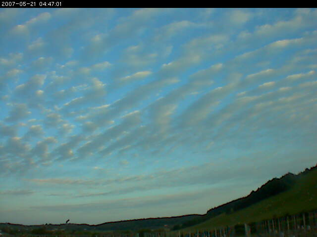
- Description: A time-lapse video showing Altocumulus undulatus
clouds. The cloud layer initially appears to be of Stratocumulus type,
with relatively poorly-defined undulatus elements. However, the layer
soon breaks up to give well-defined Altocumulus undulatus. Cirrus
clouds and contrails can be seen at a higher level towards the end of
the sequence.
- Video start time: 2007-05-21 03:00 UTC
-
Link to the video in the Zenodo repository (opens in a new tab)
Return to the top of the page.
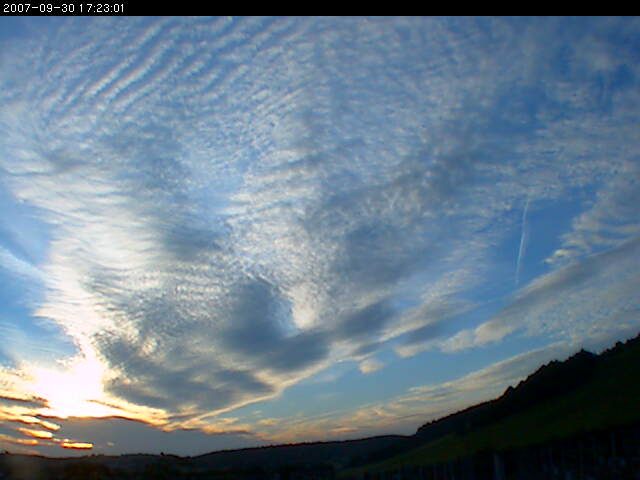
- Description: A time-lapse video showing Altocumulus clouds
displaying both undulatus and lenticularis features. A lower cloud
layer can be seen moving in a different direction at the beginning
of the sequence. Contrails and cirrus clouds can be seen at higher
levels.
- Video start time: 2007-09-30 14:30 UTC
-
Link to the video in the Zenodo repository (opens in a new tab)
Return to the top of the page.
Miscellaneous
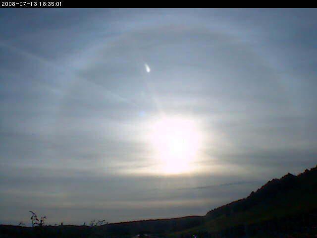
- Description: A time-lapse video showing Cirrostratus clouds
giving rise to a 22° Halo around the Sun. A number of aircraft
Contrails pass through the field of view and a Sun Dog can be seen
briefly towards the end of the sequence.
- Video start time: 2008-07-13 18:00 UTC
-
Link to the video in the Zenodo repository (opens in a new tab)
Return to the top of the page.
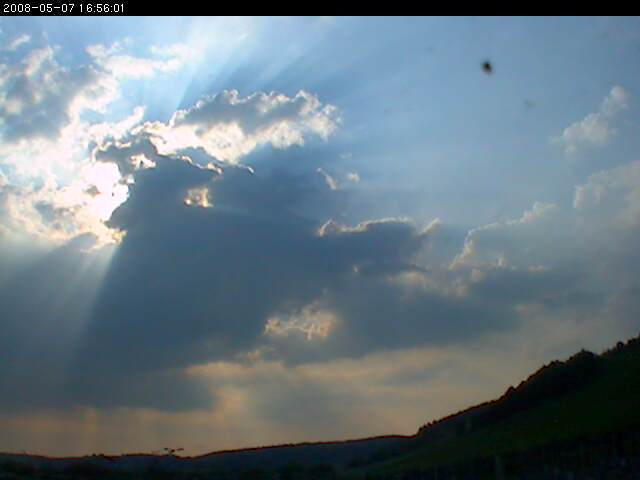
- Description: A time-lapse video showing Crepuscular Rays.
These are shafts of light that appear to radiate from the sun. The
effect is caused by the sunlight scattering from aerosols, i.e. small
particles such as dust and smoke that are suspended in the atmosphere.
It is usually seen when broken clouds are present, which leads to
alternating shafts of light and shadow. The rays of light from the
sun are actually parallel, but they appear to converge because of
the effects of perspective. This is the same effect that makes roads
appear to become more narrow as they recede into the distance. The
word crepuscular implies twilight and so the term crepuscular rays
is sometimes reserved for the effect that is seen when the sun is
just below the horizon. However, crepuscular rays can potentially be
seen at any time of day. They tend to be most dramatic when the sun
is low in the sky and when the concentration of aerosols is
particularly high. Although the clouds in this video look like Cumulus,
the cloud base (detected by a laser ceilometer at the same location
as the camera) is above 2 km suggesting that they are Altocumulus
castellanus.
- Video start time: 2008-05-07 15:00 UTC
-
Link to the video in the Zenodo repository (opens in a new tab)
Return to the top of the page.